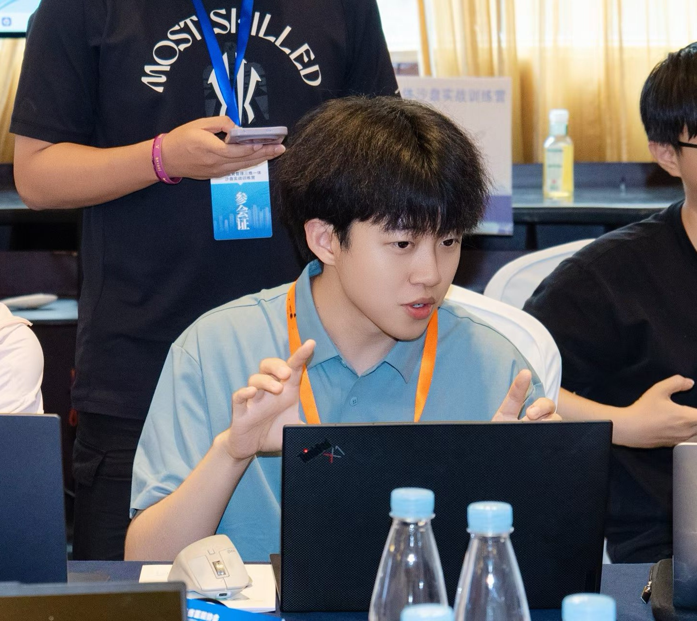
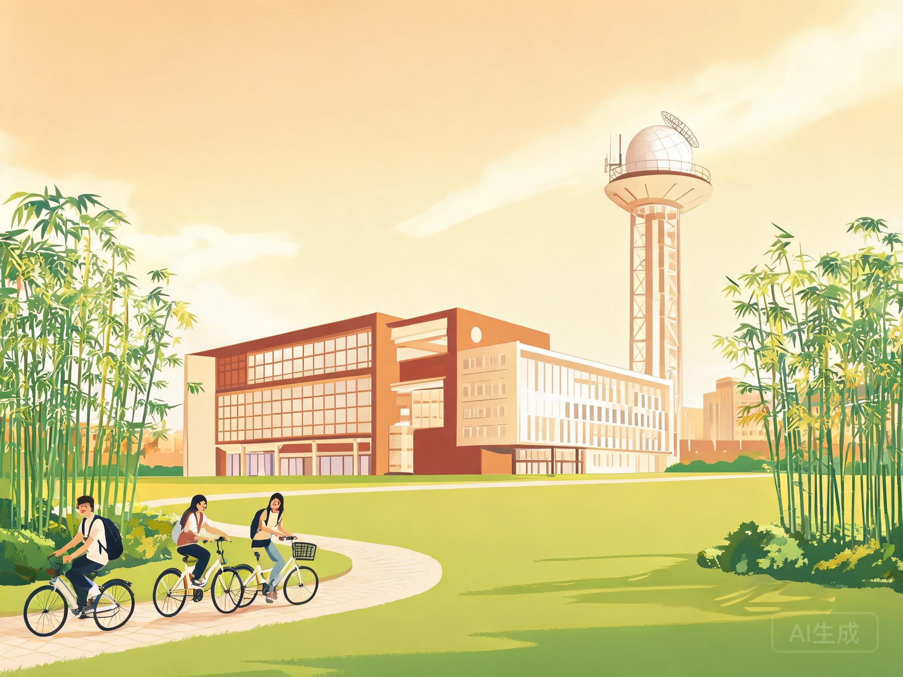
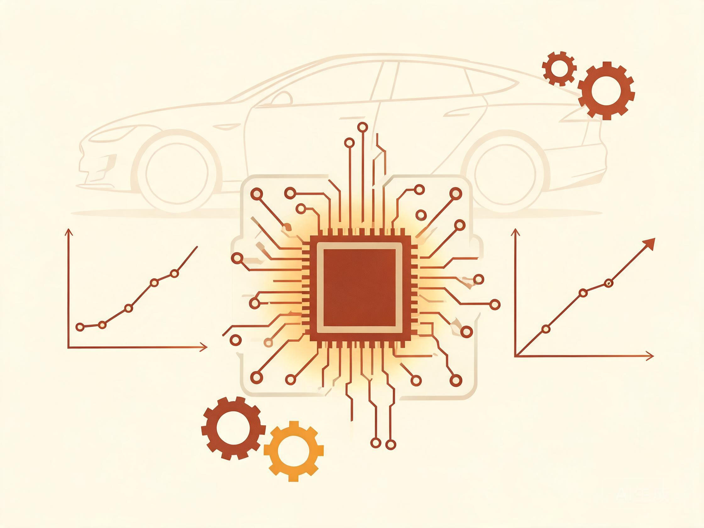
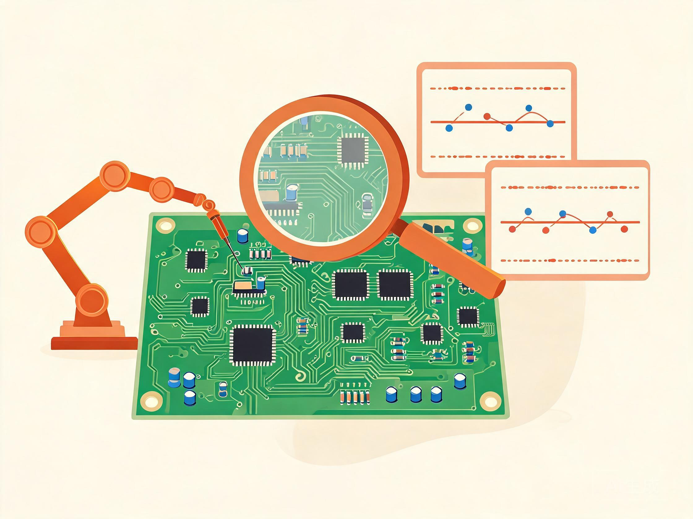
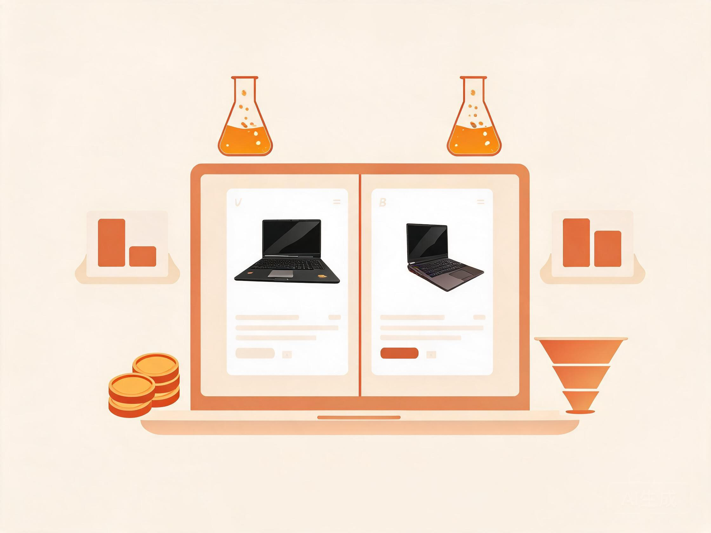
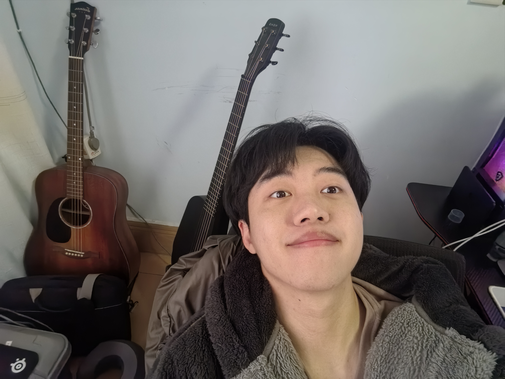

一半是沉稳理性的数据分析师，一半是抱着吉他满场跑的文艺委员。

工作ing · 专注模式我是陈仲威，一名数据分析师。硕士毕业于中央民族大学应用统计专业，目前在医疗大数据领域深耕，曾就职于宁德时代、京东，覆盖 新能源汽车、电商、医疗 三大行业。
工作中，我习惯用 SQL、Python、Tableau 等工具从海量数据里抽丝剥茧：搭指标体系、建 BI 看板、做数据建模、主导六西格玛项目，把「数据 → 洞察 → 决策」这条链路跑通跑顺。最近我还着迷于用 LLM + AI Agent 搭建自动化分析工作流，让数据自己「开口说话」。
工作之外，我是校大学生艺术团的「老团长」、绿茵场上的常驻选手、抱着吉他唱歌剪视频的自媒体创作者。沉稳与活泼并不矛盾——对数据保持敬畏，对生活保持热爱，这就是我的底色。
六年统计学科班训练，奖学金拿到「全勤」。

从电商到新能源再到医疗大数据，分析的手艺越走越扎实。
参与研发「DMIAES 医院管理智能分析及评估系统」，利用医疗大数据与专业建模方法，为医院监管机构及医院提供以数据分析为基础的整体解决方案。
担任核心支持与协调角色，专注工具链管理、配置管理、变更管理、项目管理与数据分析五大领域，为电驱动桥产品研发、测试、制造、生命周期管理和性能参数优化提供数字化支撑。
负责投影仪与智能穿戴品类的 C2M 产品定制及运营数据分析。
三个亲手跑完整链路的代表项目：降损耗、提质量、涨转化。

B02 项目 PEU 的驱动效率优化缺乏系统寻优过程。基于 ANSYS 搭建半桥开关仿真模型并标定，通过 HEEDS MDO、AMLER、JMP 进行多目标寻优，找到 PEU 损耗最小时自变量 X 的最佳组合，并检查带公差范围的稳健性保证结果可靠。沉淀出优化 PEU 效率的通用型全局寻优方法，指导后续项目设计。

PCBA 产线存在 130 个功能测试项，原有限值仅基于设计理论，无法有效识别生产过程中的微小波动，导致异常漏报或误报频发。使用 Python（pandas、scipy、matplotlib）开发全自动脚本，实现批量处理与结果可视化，制定出一套自动化识别测试项分布并制定阈值的方法，输出控制限建议报告，有效支撑质量改进决策。

负责京东游戏本类目 A/B 实验全流程：针对列表页商品卡片优化拆解业务痛点，完成实验方案设计、埋点规划、流量灰度分配、数据监控清洗，运用统计检验开展归因分析，输出产品落地建议与后续迭代优化方案，沉淀游戏本类目 A/B 实验迭代方法论。
工具箱常备常新，从统计分析到 AI 协作一个不落。
熟悉 LLM、AI Agent、Skill 工具组件编排，可独立搭建多步骤数据分析 Agent 工作流：
掌握 Agent 任务规划与工具调用编排，完成结构化 + 非结构化数据的自动探查。
代码之外的生活，同样有节奏、有热度。

「白天和数据打交道，
晚上和六弦琴聊聊天。」
吉他是我坚持最久的爱好。从艺术团团长到自媒体创作者，音乐和表达一直是我的生活底色。
弹唱与指弹双修，家里两把琴轮流宠幸，音乐是最好的解压方式。
CLICK · 查看照片绿茵场常驻选手，享受团队协作与临门一脚的纯粹快乐。
小红书创作类博主「奶昔嘎嘎」，累计阅读量破 500 万，正在筹划转向 AI 视频创作。
CLICK · 查看账号从粗剪到调色，把素材剪成故事，成就感拉满。
彩蛋：一名十多年游戏龄的资深玩家——从主机到 PC 再到手游，玩得久、玩得好，对新鲜事物永远保持热爱。